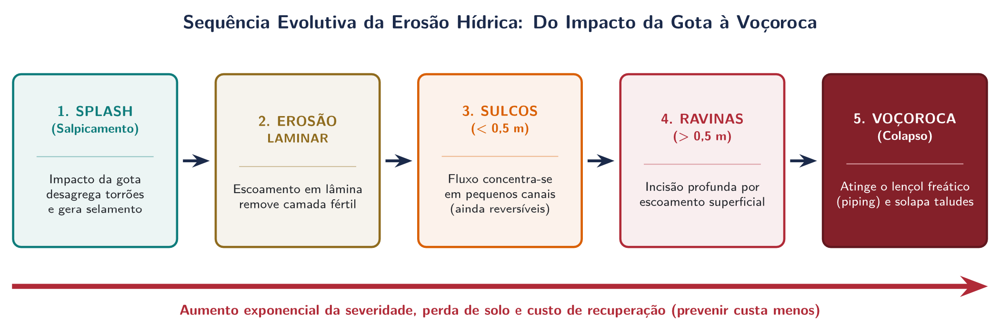
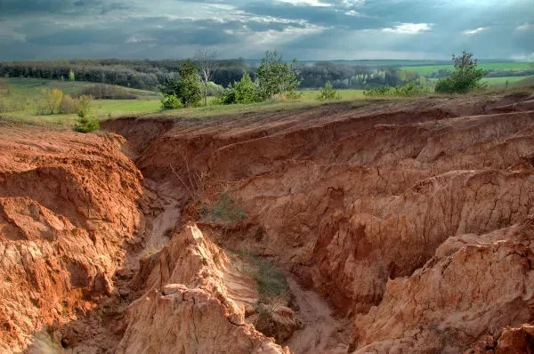
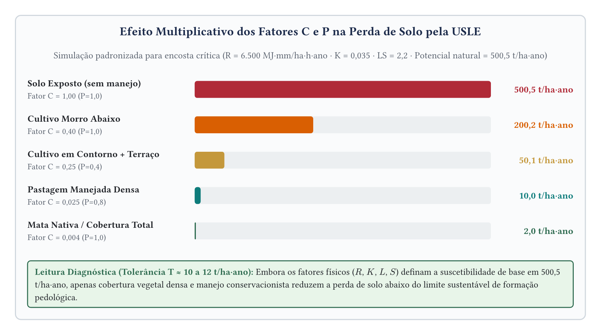
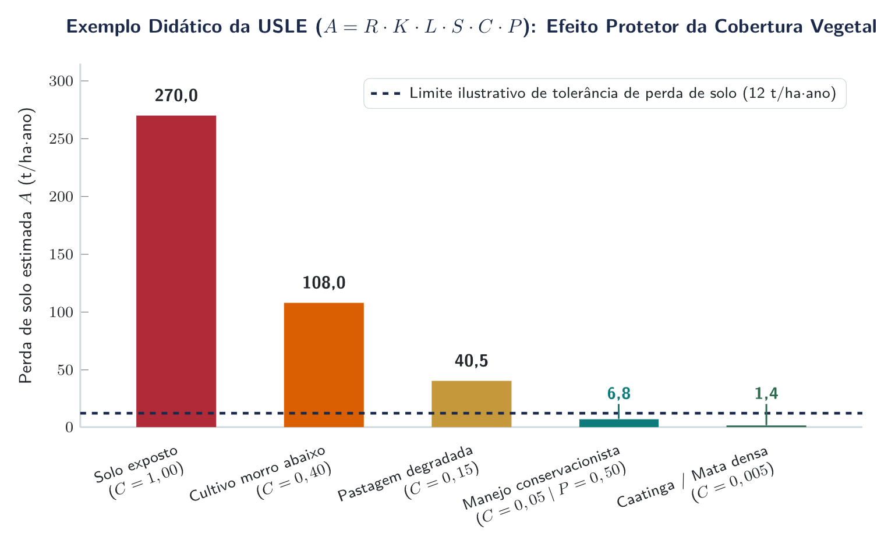

12 Diagnóstico de Processos de Degradação Ambiental e Erosão Linear
A degradação por erosão resulta da interação entre disponibilidade de material, energia do escoamento e caminhos de transporte. Reconhecer a forma erosiva ajuda a selecionar o método de avaliação, enquanto a interpretação do mecanismo exige observar drenagem, materiais e evolução temporal.
A aprendizagem envolve diferenciar processos erosivos, aplicar estimativas de perda de solo pela USLE e interpretar medições repetidas com pinos de erosão e perfis transversais. O estudante deve reconhecer a escala de validade de cada método e explicar como os resultados se relacionam ao transporte e ao assoreamento de reservatórios.
A leitura retoma balanço de massa, densidade do solo, área e volume. Taxa de perda em toneladas por hectare por ano, volume erodido em uma feição e carga sólida transportada no canal representam grandezas distintas e exigem procedimentos próprios.
Vocabulário Técnico e Símbolos do Capítulo 12
Splash (salpicamento), desagregação de partículas do solo pelo impacto cinético direto das gotas de chuva, gerando crosta de selamento superficial. Piping (erosão em túneis ou tubular), remoção interna de partículas finas do solo por fluxos subsuperficiais concentrados, criando dutos que colapsam e aceleram o avanço de voçorocas. USLE (\(A = R \cdot K \cdot L \cdot S \cdot C \cdot P\)). Modelo empírico que estima a perda média anual de solo por erosão laminar e em sulcos (\(\text{t}\cdot\text{ha}^{-1}\cdot\text{ano}^{-1}\)).
\(T\), limite de tolerância de perda de solo (\(\text{t}\cdot\text{ha}^{-1}\cdot\text{ano}^{-1}\)), correspondente à taxa máxima de erosão compatível com a renovação pedogenética e a manutenção da funcionalidade do perfil. \(h\), taxa de rebaixamento da superfície do solo (\(\text{mm}\cdot\text{ano}^{-1}\)), vinculada à perda de massa pela densidade do solo (\(D_s\)). \(\Delta \bar{h}\), variação média de exposição em uma malha de pinos de erosão (\(\text{mm}\)); valores positivos indicam erosão (rebaixamento) e negativos indicam deposição (soterramento). \(SDR\), Razão de Aporte de Sedimentos (Sediment Delivery Ratio, adimensional entre \(0\) e \(1\)), fração do solo erodido nas vertentes que efetivamente alcança o exutório ou reservatório da bacia.
Mecânica e Sequência Evolutiva da Erosão Hídrica
A erosão hídrica acelerada resulta do desequilíbrio entre a erosividade (capacidade da chuva e do escoamento de desprender e transportar partículas) e a resistência do sistema solo e vegetação (cobertura, agregação, rugosidade e infiltração). Conforme sintetizam Guerra e Cunha (1996), Ross (1994) e Cavalcanti (2006), o processo evolui em estágios progressivos de severidade física e de custo exponencial de recuperação (Figura 12.1).

Cada estágio dessa sequência (Figura 12.1) possui diagnóstico morfológico e mecânico próprio. O processo inicia-se com o impacto da gota (splash) e o selamento superficial. Quando o solo perde cobertura vegetal e serapilheira, as gotas de chuva atingem diretamente os agregados superficiais, transferindo energia cinética que os rompe e lança partículas finas de argila e silte em suspensão. Ao retornarem à superfície, essas partículas obstruem os poros de entrada de água, formando uma crosta delgada conhecida como selamento superficial, que reduz drasticamente a taxa de infiltração básica.
Com a infiltração bloqueada pelo selamento ou pela compactação prévia, a água acumula-se acima da superfície e passa a escoar em lâmina difusa sobre a vertente, iniciando a erosão laminar (entressulcos). Esse fluxo em lençol remove silenciosamente a fração mais fértil do horizonte A, carreando matéria orgânica, sementes e nutrientes até que aflorem raízes expostas, cascalhos residuais ou horizontes subsuperficiais mais claros. À medida que a lâmina d’água encontra irregularidades microtopográficas, marcas de pneus ou linhas de plantio morro abaixo, o escoamento concentra-se em filetes de maior velocidade e tensão cisalhante, escavando sulcos erosivos com profundidade inferior a \(0{,}5\text{ m}\), ainda corrigíveis por práticas conservacionistas e manejo superficial. Quando o escoamento superficial concentrado persiste sem dissipação de energia, os sulcos aprofundam-se além de \(0{,}5\text{ m}\), evoluindo para ravinas que o preparo comum do solo já não consegue eliminar. Na ravina, o agente dominante permanece sendo o escoamento superficial concentrado, que escava o leito e expande o canal de forma remontante, isto é, de jusante para montante, antes de atingir a zona saturada do subsolo.
O estágio de colapso integrado ocorre nas voçorocas, que representam a forma mais avançada e destrutiva da erosão linear. Elas se diferenciam das ravinas principalmente pelo processo hidrogeomorfológico atuante, somado às maiores dimensões métricas, pois a incisão aprofunda-se até interceptar o lençol freático ou zonas de fluxo subsuperficial saturado. A partir desse limiar, passam a atuar simultaneamente o escoamento superficial, a erosão subsuperficial em túneis (piping) e a exfiltração na base das paredes. A remoção interna de partículas finas pelos dutos subsuperficiais e a elevação da poropressão na base dos taludes provocam solapamento e escorregamentos sucessivos das paredes laterais e da cabeceira, mantendo a voçoroca ativa mesmo em períodos sem chuva intensa (Figura 12.2).

Em encostas submetidas a pastoreio extensivo e redução drástica da cobertura herbácea, a incisão de cabeceiras erosivas escalonadas promove avanço regressivo acelerado sobre a vertente, fragmentando a superfície produtiva e aumentando a conectividade direta de sedimentos em direção ao fundo de vale (Figura 12.3).

A distinção mecânica entre fluxo exclusivamente superficial e erosão associada ao lençol freático orienta diretamente a escolha das obras de estabilização em campo, evitando diagnósticos imprecisos.
Equívoco frequente. Classificar qualquer incisão com mais de \(1\text{ m}\) de profundidade automaticamente como voçoroca sem investigar a presença de água subsuperficial.
Correção técnica. A distinção geomorfológica entre ravina e voçoroca baseia-se no mecanismo dominante. Ravinas são escavadas exclusivamente por escoamento superficial concentrado, ao passo que voçorocas interceptam o lençol freático ou fluxos subsuperficiais concentrados, apresentando piping, surgências de água e solapamento de taludes. Esse diagnóstico muda o projeto de recuperação, pois voçorocas exigem drenagem subsuperficial associada ao desvio de águas superficiais.
Instabilidade de Margens Fluviais, Degradação Ripária e Assoreamento
Na escala da bacia hidrográfica, a erosão das vertentes articula-se diretamente à dinâmica dos canais fluviais e das Áreas de Preservação Permanente (APPs) marginais. A degradação ripária e o colapso de margens iniciam-se quando a supressão da mata ciliar elimina a malha radicular que confere coesão mecânica aos barrancos (tema aprofundado na bioengenharia do Capítulo 13) e expõe o talude marginal ao impacto direto da corrente fluvial. Sem a proteção das raízes e da vegetação de borda, a erosão na base do talude (undercutting) retira a sustentação inferior do barranco, gerando quedas em bloco e alargamento desordenado da calha.
Todo esse material desprendido alimenta o assoreamento de canais, açudes e reservatórios a jusante. Sempre que o aporte de sedimentos oriundo das vertentes e margens excede a capacidade de transporte do curso d’água, ocorre deposição progressiva no leito. No Semiárido Baiano, esse processo reduz rapidamente o volume útil de açudes, barreiros e pequenos barramentos comunitários, agrava a vulnerabilidade hídrica durante as estiagens e eleva a turbidez da água armazenada.
Equação Universal de Perda de Solo (USLE e RUSLE)
Desenvolvida por Wischmeier e Smith (1978) a partir de milhares de parcelas experimentais e amplamente calibrada para condições tropicais e brasileiras, a Equação Universal de Perda de Solo (USLE) estima a perda média anual de solo por erosão laminar e em sulcos a partir do produto de seis fatores físicos e de manejo. Posteriormente, sua revisão metodológica deu origem à RUSLE (Revised Universal Soil Loss Equation, Renard et al., 1997; consulte também a documentação do USDA sobre a RUSLE2), preservando a estrutura multiplicativa de seis termos e incorporando variação sazonal da erodibilidade (\(K\)), subfatores de cobertura vegetal (\(C\)) e algoritmos de fator topográfico (\(LS\)).
\[ A = R \cdot K \cdot L \cdot S \cdot C \cdot P \]
\[ h\,(\text{mm}\cdot\text{ano}^{-1}) = \frac{A\,(\text{t}\cdot\text{ha}^{-1}\cdot\text{ano}^{-1})}{10 \cdot D_s} \qquad \Longleftrightarrow \qquad A = 10 \cdot D_s \cdot h \]
Nessa formulação, \(A\) expressa a perda média anual estimada de solo (\(\text{t}\cdot\text{ha}^{-1}\cdot\text{ano}^{-1}\)), resultante da interação entre a erosividade da chuva (\(R\), em \(\text{MJ}\cdot\text{mm}\cdot\text{ha}^{-1}\cdot\text{h}^{-1}\cdot\text{ano}^{-1}\)), a erodibilidade intrínseca do solo (\(K\), em \(\text{t}\cdot\text{ha}\cdot\text{h}\cdot\text{ha}^{-1}\cdot\text{MJ}^{-1}\cdot\text{mm}^{-1}\)), os fatores topográficos adimensionais de comprimento de rampa (\(L\)) e declividade (\(S\)), o fator de uso, manejo e cobertura vegetal (\(C\), variando de \(\approx 0{,}001\) em floresta densa a \(1{,}00\) em solo descoberto) e o fator de práticas conservacionistas (\(P\), de \(1{,}00\) morro abaixo a \(0{,}20\text{-}0{,}50\) em contorno ou terraceamento). Na conversão geométrica para espessura de rebaixamento (\(h\)), \(D_s\) indica a densidade do solo (\(\text{t}\cdot\text{m}^{-3} = \text{g}\cdot\text{cm}^{-3}\)), pois \(1\text{ mm}\) de lâmina em \(1\text{ ha}\) (\(10.000\text{ m}^2\)) corresponde a \(10\text{ m}^3\) ou \(10 \cdot D_s\) toneladas.
Na interpretação dessa equação multiplicativa, o produto \(R \cdot K \cdot L \cdot S\) define o potencial natural de erosão, correspondente à perda esperada caso o solo permanecesse continuamente descoberto e mobilizado. Frente aos fatores climáticos e geomorfológicos de difícil modificação no curto prazo, os termos \(C\) e \(P\) concentram a capacidade de intervenção do manejo conservacionista (Figura 12.4). Em uma simulação padronizada para encosta crítica (\(R = 6.500\), \(K = 0{,}035\) e \(LS = 2{,}2\), cujo potencial natural atinge \(500{,}5\text{ t}\cdot\text{ha}^{-1}\cdot\text{ano}^{-1}\)), a redução multiplicativa de \(C\) e \(P\) rebaixa as perdas de \(200{,}2\text{ t}\cdot\text{ha}^{-1}\cdot\text{ano}^{-1}\) no cultivo morro abaixo para \(50{,}1\text{ t}\cdot\text{ha}^{-1}\cdot\text{ano}^{-1}\) no cultivo em contorno com terraço, alcançando patamares abaixo do limite sustentável de formação pedológica (\(T \approx 10\text{-}12\text{ t}\cdot\text{ha}^{-1}\cdot\text{ano}^{-1}\)) apenas em pastagem manejada densa (\(10{,}0\text{ t}\cdot\text{ha}^{-1}\cdot\text{ano}^{-1}\)) e sob mata nativa com cobertura total (\(2{,}0\text{ t}\cdot\text{ha}^{-1}\cdot\text{ano}^{-1}\)).

Em condições representativas de vertentes do Semiárido Baiano (\(R = 6.000\), \(K = 0{,}03\), \(LS = 1{,}5\) e potencial natural de \(270{,}0\text{ t}\cdot\text{ha}^{-1}\cdot\text{ano}^{-1}\)), o contraste entre cenários de cobertura evidencia o mesmo limiar de sustentabilidade frente a \(T = 12{,}0\text{ t}\cdot\text{ha}^{-1}\cdot\text{ano}^{-1}\) (Figura 12.5). Esse comportamento quantitativo é detalhado passo a passo no Exemplo 12.1.

Situação analisada. Uma vertente no Semiárido Baiano apresenta erosividade da chuva \(R = 6.000\text{ MJ}\cdot\text{mm}\cdot\text{ha}^{-1}\cdot\text{h}^{-1}\cdot\text{ano}^{-1}\), erodibilidade do solo \(K = 0{,}03\text{ t}\cdot\text{ha}\cdot\text{h}\cdot\text{ha}^{-1}\cdot\text{MJ}^{-1}\cdot\text{mm}^{-1}\) e fator topográfico combinado \(LS = 1{,}5\). O limite ilustrativo de tolerância de perda de solo adotado para o local é \(T = 12{,}0\text{ t}\cdot\text{ha}^{-1}\cdot\text{ano}^{-1}\).
Dados disponíveis. Cinco cenários de uso e manejo, solo exposto (\(C = 1{,}00\); \(P = 1{,}00\)), cultivo morro abaixo (\(C = 0{,}40\); \(P = 1{,}00\)), pastagem degradada (\(C = 0{,}15\); \(P = 1{,}00\)), manejo conservacionista em contorno (\(C = 0{,}05\); \(P = 0{,}50\)) e Caatinga densa preservada (\(C = 0{,}005\); \(P = 1{,}00\)).
Problema a resolver. Calcular a perda anual estimada (\(A\)) em cada cenário, verificar quais atendem ao limite de tolerância (\(A \le 12{,}0\)) e calcular a redução percentual promovida pelo manejo conservacionista em relação ao cultivo morro abaixo.
Fundamento da análise. Cálculo prévio do potencial natural de erosão (\(PNE = R \cdot K \cdot LS\)) seguido da multiplicação pelos fatores \(C\) e \(P\) de cada cenário.
Desenvolvimento. Na Etapa 1 (Potencial Natural de Erosão, \(PNE\)),
\[ PNE = R \cdot K \cdot LS = 6.000 \times 0{,}03 \times 1{,}5 = 180 \times 1{,}5 = 270{,}0\text{ t}\cdot\text{ha}^{-1}\cdot\text{ano}^{-1} \]
As unidades de \(\text{MJ}\), \(\text{mm}\), \(\text{h}\) e um fator \(\text{ha}\) cancelam-se entre \(R\) e \(K\), restando \(\text{t}\cdot\text{ha}^{-1}\cdot\text{ano}^{-1}\). Na Etapa 2 (Perda de solo \(A\) nos cinco cenários),
\[ \begin{aligned} A_1\; (\text{solo exposto}) &= 270{,}0 \times 1{,}00 \times 1{,}00 = 270{,}0\text{ t}\cdot\text{ha}^{-1}\cdot\text{ano}^{-1} \quad (> 12\text{, crítico}) \\ A_2\; (\text{cultivo morro abaixo}) &= 270{,}0 \times 0{,}40 \times 1{,}00 = 108{,}0\text{ t}\cdot\text{ha}^{-1}\cdot\text{ano}^{-1} \quad (> 12\text{, insustentável}) \\ A_3\; (\text{pastagem degradada}) &= 270{,}0 \times 0{,}15 \times 1{,}00 = 40{,}5\text{ t}\cdot\text{ha}^{-1}\cdot\text{ano}^{-1} \quad (> 12\text{, acima do limite}) \\ A_4\; (\text{manejo conservacionista}) &= 270{,}0 \times 0{,}05 \times 0{,}50 = 6{,}75\text{ t}\cdot\text{ha}^{-1}\cdot\text{ano}^{-1} \quad (\le 12\text{, sustentável}) \\ A_5\; (\text{Caatinga densa}) &= 270{,}0 \times 0{,}005 \times 1{,}00 = 1{,}35\text{ t}\cdot\text{ha}^{-1}\cdot\text{ano}^{-1} \quad (\le 12\text{, referência}) \end{aligned} \]
Na Etapa 3 (Redução do manejo conservacionista \(A_4\) frente ao cultivo morro abaixo \(A_2\)),
\[ \text{Redução} = \frac{108{,}0 - 6{,}75}{108{,}0}\times 100\% = \frac{101{,}25}{108{,}0}\times 100\% = 93{,}75\% \]
Interpretação do resultado. Perdas de \(270{,}0\) (solo exposto), \(108{,}0\) (morro abaixo), \(40{,}5\) (pastagem degradada), \(6{,}75\) (manejo conservacionista) e \(1{,}35\text{ t}\cdot\text{ha}^{-1}\cdot\text{ano}^{-1}\) (Caatinga). Apenas os cenários 4 e 5 atendem ao limite \(T = 12\text{ t}\cdot\text{ha}^{-1}\cdot\text{ano}^{-1}\); o manejo conservacionista reduz a erosão em \(93{,}75\%\).
Condições de validade. Os valores coincidem com as barras da Figura 12.5 (onde \(6{,}75\) e \(1{,}35\) aparecem arredondados para uma casa decimal, \(6{,}8\) e \(1{,}4\)) e indicam que a cobertura do solo (\(C\)) exerce peso decisivo no controle erosivo.
Tanto a USLE quanto a RUSLE restringem-se à estimativa da perda bruta por erosão laminar e em sulcos nas vertentes, deixando de fora processos lineares profundos ou deposição na base da encosta. Para estimar a fração do sedimento erodido que efetivamente alcança um reservatório ou exutório, associa-se a equação à Razão de Aporte de Sedimentos (\(SDR\)). Ignorar esse domínio de validade gera superestimações ou lacunas graves nos diagnósticos de bacias.
Equívoco frequente. Usar \(A = R \cdot K \cdot L \cdot S \cdot C \cdot P\) como se o resultado englobasse toda a produção de sedimentos de uma bacia com voçorocas ativas e desmoronamento de margens.
Correção técnica. A USLE foi calibrada exclusivamente para erosão laminar e em sulcos nas vertentes. Processos lineares profundos (ravinas e voçorocas) e erosão marginal devem ser quantificados separadamente por perfis transversais, estacas de recuo, levantamento topográfico ou fotogrametria com drone.
Para traduzir perdas em toneladas por hectare para uma grandeza diretamente perceptível na morfologia do solo superficial, converte-se \(A\) em espessura anual de rebaixamento (\(h\)), como mostra o Exemplo 12.2.
Situação analisada. Para comunicar a agricultores e gestores o significado físico da perda de solo obtida no cenário de cultivo morro abaixo do Exemplo 12.1 (\(A = 108{,}0\text{ t}\cdot\text{ha}^{-1}\cdot\text{ano}^{-1}\)), converta essa taxa em espessura anual de solo removido e estime quanto do horizonte A será perdido em \(25\) anos.
Dados disponíveis. \(A = 108{,}0\text{ t}\cdot\text{ha}^{-1}\cdot\text{ano}^{-1}\); densidade do solo da camada superficial \(D_s = 1{,}35\text{ g}\cdot\text{cm}^{-3} = 1{,}35\text{ t}\cdot\text{m}^{-3}\); horizonte temporal de análise igual a \(25\text{ anos}\).
Problema a resolver. Calcular a taxa anual de rebaixamento \(h\) (\(\text{mm}\cdot\text{ano}^{-1}\)) e a espessura acumulada removida em \(25\) anos (em \(\text{cm}\)).
Fundamento da análise. Aplicação da relação geométrica \(h = A / (10 \cdot D_s)\) e multiplicação pelo horizonte de \(25\) anos.
Desenvolvimento. Na Etapa 1 (Massa correspondente a \(1\text{ mm}\) de solo em \(1\text{ ha}\)), \(M_{1\text{mm}} = 10 \cdot D_s = 10 \times 1{,}35 = 13{,}5\text{ t}\cdot\text{ha}^{-1}\cdot\text{mm}^{-1}\). Na Etapa 2 (Rebaixamento anual),
\[ h = \frac{108{,}0}{13{,}5} = 8{,}00\text{ mm}\cdot\text{ano}^{-1} \]
Na Etapa 3 (Rebaixamento acumulado em \(25\) anos),
\[ H_{25} = 8{,}00\text{ mm}\cdot\text{ano}^{-1} \times 25\text{ anos} = 200{,}0\text{ mm} = 20{,}0\text{ cm} \]
Interpretação do resultado. Taxa de rebaixamento de \(8{,}00\text{ mm}\cdot\text{ano}^{-1}\), removendo \(20{,}0\text{ cm}\) de solo superficial em \(25\) anos.
Condições de validade. Em solos rasos do Semiárido Baiano (como Neossolos Litólicos e Luvissolos com horizonte A entre \(15\) e \(25\text{ cm}\)), perder \(20\text{ cm}\) em um quarto de século significa eliminar completamente a camada biologicamente ativa e expor o horizonte B ou a rocha alterada, acelerando a desertificação edáfica.
Antes de finalizar qualquer simulação da USLE, convém checar a compatibilidade dimensional entre os parâmetros climáticos e edáficos retirados da literatura.
Equívoco frequente. Multiplicar um fator \(R\) no Sistema Internacional (\(\text{MJ}\cdot\text{mm}\cdot\text{ha}^{-1}\cdot\text{h}^{-1}\cdot\text{ano}^{-1}\)) por um fator \(K\) retirado de tabelas antigas em unidades norte-americanas sem conversão.
Correção técnica. Confira sempre a análise dimensional de \(R \cdot K\), pois no Sistema Internacional esse produto deve resultar diretamente em \(\text{t}\cdot\text{ha}^{-1}\cdot\text{ano}^{-1}\). Divergências de ordem de grandeza (\(10\times\) ou \(100\times\)) frequentemente denunciam incompatibilidade de unidades entre \(R\) e \(K\).
Protocolos Quantitativos de Diagnóstico e Monitoramento em Campo
Modelos como a USLE e a RUSLE fornecem estimativas valiosas para o planejamento, mas o diagnóstico rigoroso de processos ativos em campo exige medições diretas e rastreáveis. Para quantificar a erosão laminar e em sulcos nas vertentes e taludes, emprega-se o Método dos Pinos de Erosão, que consiste na cravação vertical de vergalhões metálicos ou pinos rígidos (tipicamente de \(30\) a \(50\text{ cm}\) de comprimento) dispostos em malha ou transectos, deixando uma altura inicial exposta padronizada (por exemplo, \(150\text{ mm}\)) marcada com anilha ou pintura. Após cada evento chuvoso ou ciclo anual, mede-se novamente a altura exposta com paquímetro ou régua milimetrada, de modo que o aumento na altura exposta (\(\Delta h > 0\)) registra rebaixamento erosivo, ao passo que a diminuição (\(\Delta h < 0\)) indica deposição local de sedimentos. O Exemplo 12.3 aplica esse protocolo a um talude de corte monitorado durante um ano.
Situação analisada. Cinco pinos de erosão foram instalados ao longo de um perfil de talude exposto próximo à estrada de acesso de um empreendimento, todos com altura inicial exposta padronizada de \(150\text{ mm}\). Após um ciclo hidrológico de \(12\) meses, novas leituras foram coletadas com paquímetro.
Dados disponíveis. Altura inicial exposta em todos os pinos igual a \(h_0 = 150\text{ mm}\). Leituras após \(12\) meses (do topo à base do talude) de \(168\text{ mm}\) (Pino 1), \(174\text{ mm}\) (Pino 2), \(162\text{ mm}\) (Pino 3), \(156\text{ mm}\) (Pino 4) e \(140\text{ mm}\) no sopé (Pino 5). Densidade do solo local de \(D_s = 1{,}40\text{ g}\cdot\text{cm}^{-3}\).
Problema a resolver. Calcular a variação \(\Delta h_i\) em cada pino, o balanço líquido médio de rebaixamento (\(\Delta \bar{h}\)) e a perda líquida equivalente de solo em \(\text{t}\cdot\text{ha}^{-1}\cdot\text{ano}^{-1}\).
Fundamento da análise. Cálculo individual \(\Delta h_i = h_{1,i} - h_0\) (respeitando sinais positivos para erosão e negativos para deposição), média aritmética e conversão via \(A = 10 \cdot D_s \cdot \Delta \bar{h}\).
Desenvolvimento. Na Etapa 1 (Variação em cada pino),
\[ \begin{aligned} \Delta h_1 &= 168 - 150 = +18\text{ mm} \quad (\text{erosão}) \\ \Delta h_2 &= 174 - 150 = +24\text{ mm} \quad (\text{erosão máxima no terço médio}) \\ \Delta h_3 &= 162 - 150 = +12\text{ mm} \quad (\text{erosão}) \\ \Delta h_4 &= 156 - 150 = +6\text{ mm} \quad (\text{erosão moderada}) \\ \Delta h_5 &= 140 - 150 = -10\text{ mm} \quad (\text{deposição no sopé}) \end{aligned} \]
Na Etapa 2 (Balanço líquido médio \(\Delta \bar{h}\)) e na Etapa 3 (Perda líquida equivalente de solo),
\[ \Delta \bar{h} = \frac{18 + 24 + 12 + 6 + (-10)}{5} = \frac{50}{5} = +10{,}0\text{ mm}\cdot\text{ano}^{-1} \qquad\qquad A_{\text{pinos}} = 10 \times 1{,}40 \times 10{,}0 = 140{,}0\text{ t}\cdot\text{ha}^{-1}\cdot\text{ano}^{-1} \]
Interpretação do resultado. Rebaixamento líquido médio de \(10{,}0\text{ mm}\cdot\text{ano}^{-1}\), correspondente a uma perda líquida equivalente de \(140{,}0\text{ t}\cdot\text{ha}^{-1}\cdot\text{ano}^{-1}\).
Condições de validade. O sinal negativo no Pino 5 (\(-10\text{ mm}\)) é fisicamente esperado em encostas, pois parte do sedimento removido dos segmentos superiores e médios deposita-se no sopé com a redução da declividade. Desconsiderar o sinal negativo superestimaria o balanço líquido da encosta.
Quando a feição erosiva já evoluiu para ravinas ou voçorocas ativas, a taxa de expansão horizontal passa a ser acompanhada por estacas de monitoramento de recuo de cabeceira e bordas, instaladas externamente a distâncias conhecidas (\(2{,}0\) a \(5{,}0\text{ m}\) além da escarpa instável) para medir o avanço remontante (\(\text{m}\cdot\text{ano}^{-1}\)). Para quantificar o volume de solo efetivamente escavado ao longo do canal, levantam-se perfis transversais repetidos em seções fixas com posição, orientação e referência altimétrica preservadas, espaçadas pela distância \(L_{\text{seg}}\). Medindo a largura superior (\(B\)), a largura de fundo (\(b\)) e a profundidade vertical média (\(h_{\text{rav}}\)) a partir de uma trena esticada entre estacas niveladas, estima-se a área trapezoidal \(A = \frac{B + b}{2}\cdot h_{\text{rav}}\), integra-se o volume entre seções (\(V = \frac{A_1 + A_2}{2}\cdot L_{\text{seg}}\)) e converte-se em massa (\(M = V \cdot D_s\)) com base na densidade representativa do material mobilizado (Exemplo 12.4). Essas medições são complementadas por fichas padronizadas de avaliação visual contendo coordenadas, posição na vertente, cobertura vegetal, selamento superficial, surgências de água e registro fotográfico com escala métrica.
Situação analisada. Para dimensionar estruturas de contenção em uma ravina ativa com \(40{,}0\text{ m}\) de extensão, uma equipe levantou duas seções transversais representativas (Seção 1 a montante e Seção 2 a jusante), ambas aproximadas por geometria trapezoidal.
Dados disponíveis. Comprimento do trecho entre seções igual a \(L = 40{,}0\text{ m}\). Seção 1 com largura de topo \(B_1 = 3{,}2\text{ m}\), largura de fundo \(b_1 = 1{,}2\text{ m}\) e profundidade \(h_1 = 1{,}5\text{ m}\). Seção 2 com \(B_2 = 4{,}0\text{ m}\), \(b_2 = 1{,}6\text{ m}\) e profundidade \(h_2 = 2{,}0\text{ m}\). Densidade média do solo do perfil igual a \(D_s = 1{,}45\text{ t}\cdot\text{m}^{-3}\).
Problema a resolver. Calcular a área de cada seção (\(A_1\) e \(A_2\)), o volume total de solo escavado (\(V\)) pelo método da média das áreas e a massa total mobilizada (\(M\)).
Fundamento da análise. Área do trapézio \(A = \frac{B + b}{2}\cdot h\), volume prismoidal simplificado \(V = \frac{A_1 + A_2}{2}\cdot L\) e conversão para massa \(M = V \cdot D_s\).
Desenvolvimento. Na Etapa 1 (Área das seções transversais),
\[ A_1 = \frac{3{,}2 + 1{,}2}{2}\times 1{,}5 = \frac{4{,}4}{2}\times 1{,}5 = 2{,}2 \times 1{,}5 = 3{,}30\text{ m}^2 \qquad\qquad A_2 = \frac{4{,}0 + 1{,}6}{2}\times 2{,}0 = \frac{5{,}6}{2}\times 2{,}0 = 2{,}8 \times 2{,}0 = 5{,}60\text{ m}^2 \]
Na Etapa 2 (Volume total mobilizado no trecho de \(40\text{ m}\)) e na Etapa 3 (Massa total de solo mobilizada),
\[ V = \frac{3{,}30 + 5{,}60}{2}\times 40{,}0 = \frac{8{,}90}{2}\times 40{,}0 = 4{,}45 \times 40{,}0 = 178{,}0\text{ m}^3 \qquad\qquad M = 178{,}0\text{ m}^3 \times 1{,}45\text{ t}\cdot\text{m}^{-3} = 258{,}1\text{ t} \]
Interpretação do resultado. \(A_1 = 3{,}30\text{ m}^2\), \(A_2 = 5{,}60\text{ m}^2\), volume escavado \(V = 178{,}0\text{ m}^3\) e massa mobilizada de \(258{,}1\text{ toneladas}\) de solo.
Condições de validade. O volume de \(178\text{ m}^3\) equivale a aproximadamente \(15\) a \(18\) caminhões basculantes convencionais carregados de solo removidos de uma única ravina de \(40\text{ m}\), grande parte dos quais segue em direção a drenagens e açudes a jusante.
Síntese Aplicada, Assoreamento de Reservatórios na Escala de Microbacia
A perda de solo estimada na vertente pela USLE representa material desprendido sob as condições locais de rampa, mas parte desse sedimento deposita-se antes de alcançar a rede fluvial. A carga sólida efetivamente entregue ao exutório ou a um açude depende da conectividade entre fontes, caminhos de escoamento e faixas ripárias, sendo sintetizada pela Razão de Aporte de Sedimentos (\(SDR\)), conforme ilustrado no Exemplo 12.5.
Situação analisada. Uma microbacia rural de \(250\text{ ha}\) no Semiárido Baiano drena para um açude comunitário com capacidade inicial de armazenamento de \(160.000\text{ m}^3\). Estudos anteriores estimaram perda média de solo pela USLE de \(A = 32{,}0\text{ t}\cdot\text{ha}^{-1}\cdot\text{ano}^{-1}\) na microbacia e Razão de Aporte de Sedimentos \(SDR = 0{,}25\) (isto é, \(25\%\) do solo erodido nas vertentes atinge o reservatório).
Dados disponíveis. Área da microbacia de \(250\text{ ha}\); perda média USLE de \(A = 32{,}0\text{ t}\cdot\text{ha}^{-1}\cdot\text{ano}^{-1}\); \(SDR = 0{,}25\); densidade aparente do sedimento depositado no fundo do açude de \(\rho_{\text{sed}} = 1{,}25\text{ t}\cdot\text{m}^{-3}\); capacidade útil inicial de \(V_0 = 160.000\text{ m}^3\).
Problema a resolver. Calcular a produção anual de sedimentos que chega ao açude (\(Y\), em \(\text{t}\cdot\text{ano}^{-1}\)), o volume assoreado por ano (\(V_{\text{sed}}\)) e o percentual da capacidade inicial perdido em \(20\) anos caso não haja conservação na microbacia.
Fundamento da análise. Cálculo do aporte de sedimentos \(Y = A \cdot \text{Área} \cdot SDR\), conversão para volume (\(V_{\text{sed}} = Y / \rho_{\text{sed}}\)) e projeção linear de \(20\) anos frente ao volume inicial.
Desenvolvimento. Na Etapa 1 (Aporte anual de sedimentos \(Y\)) e na Etapa 2 (Volume anual de assoreamento \(V_{\text{sed}}\)),
\[ Y = 32{,}0\text{ t}\cdot\text{ha}^{-1}\cdot\text{ano}^{-1} \times 250\text{ ha} \times 0{,}25 = 2.000{,}0\text{ t}\cdot\text{ano}^{-1} \qquad\qquad V_{\text{sed}} = \frac{2.000{,}0\text{ t}\cdot\text{ano}^{-1}}{1{,}25\text{ t}\cdot\text{m}^{-3}} = 1.600{,}0\text{ m}^3\cdot\text{ano}^{-1} \]
Na Etapa 3 (Volume assoreado em \(20\) anos e perda percentual de capacidade),
\[ V_{20} = 1.600{,}0 \times 20 = 32.000{,}0\text{ m}^3 \qquad\qquad \text{Perda percentual} = \frac{32.000{,}0}{160.000{,}0}\times 100\% = 20{,}0\% \]
Interpretação do resultado. Aporte anual de \(2.000{,}0\text{ t}\cdot\text{ano}^{-1}\) (\(1.600{,}0\text{ m}^3\cdot\text{ano}^{-1}\)), provocando perda de \(20{,}0\%\) da capacidade de armazenamento do açude em \(20\) anos.
Condições de validade. O resultado indica a conexão indissociável entre manejo de solos nas vertentes e segurança hídrica no Semiárido, pois sem controle erosivo na microbacia (redução de \(C\) e \(P\) e recomposição ripária), um quinto do volume do reservatório desaparece em duas décadas.
Armadilha Conceitual e Materiais Audiovisuais de Apoio
Ao processar leituras de campo em transectos de encosta, a interpretação dos sinais de variação altimétrica exige cuidado para que pontos de acumulação local não sejam omitidos do balanço sedimentológico.
Equívoco frequente. Descartar ou tomar em módulo as leituras de pinos parcialmente soterrados na base de uma encosta.
Correção técnica. Pinos com \(\Delta h < 0\) registram redistribuição interna de sedimentos (deposição). Para estimar o balanço líquido da vertente, preserva-se o sinal algébrico na média; para analisar separadamente a zona de perda máxima, reportam-se ambos os valores (erosão bruta nos segmentos de perda e balanço líquido total).
Para aprofundar o estudo sobre recuperação de áreas degradadas e conservação do solo em pastagens e cultivos, assista às videoaulas selecionadas na página da disciplina, começando por Recuperação de Pastagens Degradadas e Sistema Plantio Direto, que aborda estratégias de renovação e proteção superficial do solo, e prosseguindo com Recuperação de Pastagens Degradadas, sobre integração produtiva e recomposição da cobertura vegetal.
Exercícios de fixação
Nível Básico (Processos Erosivos, Morfologia e Conceitos)
Descreva o papel do impacto da gota de chuva (splash) na formação do selamento superficial e explique como esse fenômeno acelera o surgimento da erosão laminar.
Estabeleça a diferença técnica entre sulco, ravina e voçoroca quanto aos processos hidrológicos atuantes e à reversibilidade por manejo convencional.
O que é piping e por que sua identificação em campo é decisiva antes de propor obras de estabilização em uma encosta?
Explique o significado físico de cada um dos seis fatores da Equação Universal de Perda de Solo (\(A = R \cdot K \cdot L \cdot S \cdot C \cdot P\)) e indique quais dois fatores podem ser diretamente modificados pelo manejo conservacionista.
Explique como a degradação de áreas ripárias (matas ciliares) contribui simultaneamente para a instabilidade de margens fluviais e para o assoreamento de reservatórios.
Nível Intermediário (Cálculos de USLE, Pinos, Perfis e Assoreamento)
Uma área agrícola apresenta \(R = 5.000\text{ MJ}\cdot\text{mm}\cdot\text{ha}^{-1}\cdot\text{h}^{-1}\cdot\text{ano}^{-1}\), \(K = 0{,}025\text{ t}\cdot\text{ha}\cdot\text{h}\cdot\text{ha}^{-1}\cdot\text{MJ}^{-1}\cdot\text{mm}^{-1}\), \(LS = 2{,}0\) e fator de manejo \(C = 0{,}20\). Calcule a perda anual de solo (\(A\)) sob plantio morro abaixo (\(P = 1{,}00\)) e sob plantio em contorno (\(P = 0{,}50\)).
Uma vertente submetida a uso intensivo registra perda anual estimada de \(A = 70{,}0\text{ t}\cdot\text{ha}^{-1}\cdot\text{ano}^{-1}\) em um solo com densidade \(D_s = 1{,}40\text{ g}\cdot\text{cm}^{-3}\). Calcule o rebaixamento anual da superfície (\(h\), em \(\text{mm}\cdot\text{ano}^{-1}\)) e a espessura acumulada perdida em \(20\) anos (em \(\text{cm}\)).
Quatro pinos de erosão instalados em uma encosta registraram, após um ano, as seguintes variações de altura exposta (\(\Delta h\)), \(+14\text{ mm}\), \(+18\text{ mm}\), \(+10\text{ mm}\) e \(-2\text{ mm}\). Sabendo que a densidade do solo é \(D_s = 1{,}30\text{ g}\cdot\text{cm}^{-3}\), calcule o rebaixamento líquido médio (\(\Delta \bar{h}\)) e a perda líquida equivalente em \(\text{t}\cdot\text{ha}^{-1}\cdot\text{ano}^{-1}\).
Uma ravina com \(30{,}0\text{ m}\) de extensão teve duas seções transversais trapezoidais medidas, Seção 1 (\(B_1 = 2{,}4\text{ m}\); \(b_1 = 0{,}8\text{ m}\); \(h_1 = 1{,}0\text{ m}\)) e Seção 2 (\(B_2 = 3{,}6\text{ m}\); \(b_2 = 1{,}2\text{ m}\); \(h_2 = 1{,}5\text{ m}\)). Considerando \(D_s = 1{,}50\text{ t}\cdot\text{m}^{-3}\), calcule o volume total (\(V\)) e a massa (\(M\)) de solo mobilizado.
Uma microbacia de \(400\text{ ha}\) apresenta perda média de solo \(A = 25{,}0\text{ t}\cdot\text{ha}^{-1}\cdot\text{ano}^{-1}\) e \(SDR = 0{,}20\), drenando para um açude de \(80.000\text{ m}^3\) de capacidade útil inicial. Adotando \(\rho_{\text{sed}} = 1{,}25\text{ t}\cdot\text{m}^{-3}\), calcule o volume anual assoreado e o percentual de capacidade perdido em \(10\) anos.
Nível Aplicado (Questões Objetivas A-E)
Na sequência evolutiva da erosão hídrica (Guerra; Cunha, 1996), a transição de uma ravina para uma voçoroca caracteriza-se fundamentalmente por,
Interrupção completa do escoamento superficial durante os eventos de chuva.
Interseção da incisão com o lençol freático ou fluxos subsuperficiais concentrados, desencadeando piping e solapamento de taludes.
Reversibilidade imediata por uma única operação de aração rasa do solo.
Deposição contínua de matéria orgânica que fecha naturalmente o canal em poucos meses.
Ausência de recuo remontante na cabeceira da feição erosiva.
A respeito das limitações metodológicas da Equação Universal de Perda de Solo (USLE), assinale a alternativa correta,
A USLE quantifica diretamente o volume escavado em grandes voçorocas causadas por piping.
O fator \(K\) representa a energia cinética das chuvas e depende exclusivamente do regime climático regional.
A USLE estima a perda média anual por erosão laminar e em sulcos nas vertentes, não computando diretamente erosão em voçorocas, margens fluviais nem deposição ao longo do trajeto sem o uso do \(SDR\).
A redução do fator \(C\) por meio de cobertura vegetal aumenta proporcionalmente a perda de solo \(A\).
O produto \(C \cdot P\) representa o potencial natural de erosão de uma bacia independente da ação humana.
Uma parcela experimental apresenta \(R = 4.000\text{ MJ}\cdot\text{mm}\cdot\text{ha}^{-1}\cdot\text{h}^{-1}\cdot\text{ano}^{-1}\), \(K = 0{,}04\text{ t}\cdot\text{ha}\cdot\text{h}\cdot\text{ha}^{-1}\cdot\text{MJ}^{-1}\cdot\text{mm}^{-1}\), \(LS = 1{,}5\), \(C = 0{,}10\) e \(P = 0{,}50\). A perda média anual de solo (\(A\)) estimada pela USLE é,
\(6{,}0\text{ t}\cdot\text{ha}^{-1}\cdot\text{ano}^{-1}\).
\(12{,}0\text{ t}\cdot\text{ha}^{-1}\cdot\text{ano}^{-1}\).
\(24{,}0\text{ t}\cdot\text{ha}^{-1}\cdot\text{ano}^{-1}\).
\(48{,}0\text{ t}\cdot\text{ha}^{-1}\cdot\text{ano}^{-1}\).
\(240{,}0\text{ t}\cdot\text{ha}^{-1}\cdot\text{ano}^{-1}\).
No monitoramento de processos erosivos em campo, o método mais adequado para mensurar a taxa anual de recuo remontante da cabeceira de uma voçoroca ativa é,
Determinação de pH e saturação por bases em laboratório.
Instalação de estacas fixas de referência externas à borda instável com medições periódicas de distância até a escarpa.
Uso isolado de infiltrômetro de anel dentro do leito alagado do rio principal.
Cálculo exclusivo do fator \(R\) a partir da precipitação média mensal.
Estimativa visual sem marco fixo nem registro de data.
Em uma parcela monitorada com quatro pinos de erosão durante \(12\) meses, as variações de altura exposta foram \(+12\text{ mm}\), \(+8\text{ mm}\), \(+16\text{ mm}\) e \(+4\text{ mm}\). Adotando \(D_s = 1{,}25\text{ g}\cdot\text{cm}^{-3}\), a perda de solo equivalente no período é,
\(10{,}0\text{ t}\cdot\text{ha}^{-1}\cdot\text{ano}^{-1}\).
\(50{,}0\text{ t}\cdot\text{ha}^{-1}\cdot\text{ano}^{-1}\).
\(100{,}0\text{ t}\cdot\text{ha}^{-1}\cdot\text{ano}^{-1}\).
\(125{,}0\text{ t}\cdot\text{ha}^{-1}\cdot\text{ano}^{-1}\).
\(150{,}0\text{ t}\cdot\text{ha}^{-1}\cdot\text{ano}^{-1}\).
Questões de aplicação
Integração entre Diagnóstico (Módulo 4) e Intervenção (Módulo 5)
Em concursos e no ENADE, o diagnóstico da forma erosiva (laminar, sulco, ravina ou voçoroca) aparece quase sempre acoplado à escolha da técnica de controle. Prevenir com cobertura (\(C\)) e conservação (\(P\)) custa uma fração mínima do investimento necessário para estabilizar uma voçoroca instalada.
[Questão Autoral, Estilo ENADE / Geografia] Durante o diagnóstico ambiental de uma microbacia rural no interior baiano, observou-se uma grande incisão linear com \(4{,}2\text{ m}\) de profundidade, paredes subverticais com marcas de escorregamento rotacional, dutos subterrâneos drenando água na base do talude mesmo após \(20\) dias sem chuva e forte assoreamento de um riacho a jusante. Com base na geomorfologia da erosão linear, conclui-se que a feição corresponde a,
Erosão laminar incipiente, controlável apenas com adubação química superficial.
Sulco raso efêmero, gerado exclusivamente por impacto direto da gota (splash).
Ravina rasa desconectada do sistema hidrogeológico local.
Voçoroca ativa com atuação combinada de fluxo superficial, exfiltração do lençol freático, piping e solapamento de taludes, demandando drenagem superficial e subsuperficial associada à estabilização de taludes.
Processo natural de equilíbrio ecodinâmico estável segundo Tricart (1977), sem necessidade de intervenção.
[Questão Autoral, Estilo Concurso Analista Ambiental] Um gestor público dispõe de recursos limitados para reduzir o assoreamento de um açude abastecedor no Semiárido. Simulações com a USLE indicaram que duas sub-bacias possuem igual área e igual clima (\(R\)), porém a Sub-bacia 1 possui solo exposto (\(C = 0{,}80\); \(P = 1{,}00\)) sobre vertentes íngremes (\(LS = 2{,}5\)), enquanto a Sub-bacia 2 possui Caatinga conservada (\(C = 0{,}01\); \(P = 1{,}00\)) em relevo suave (\(LS = 0{,}5\)). Considerando igual erodibilidade \(K\), a razão entre a perda de solo estimada na Sub-bacia 1 e na Sub-bacia 2 (\(A_1 / A_2\)) é igual a,
\(4\) vezes maior.
\(40\) vezes maior.
\(80\) vezes maior.
\(200\) vezes maior.
\(400\) vezes maior.
[Questão Autoral, Estilo Concurso Geógrafo / Órgão Estadual de Meio Ambiente] Ao elaborar o diagnóstico de áreas degradadas para um Relatório Ambiental, qual combinação de ferramentas garante simultaneamente avaliação da erosão difusa nas vertentes, monitoramento direto de rebaixamento em taludes e quantificação do volume de solo mobilizado em ravinas?
Apenas entrevista com moradores locais e consulta à precipitação média anual.
USLE aplicada às vertentes, malha de pinos de erosão em taludes expostos e levantamento de perfis transversais georreferenciados nas ravinas.
Apenas análise química de \(V\%\) e pH no fundo do reservatório assoreado.
Cálculo isolado do fator \(R\) sem considerar uso da terra nem declividade.
Medição única da densidade de partículas (\(D_p\)) em laboratório.
Gabarito comentado
Resoluções Completas, Exercícios de Fixação (1 a 15)
O impacto direto das gotas de chuva (splash) sobre solo desprotegido desagrega torrões e libera argila e silte em suspensão. Essas partículas finas entopem os poros da superfície, criando uma crosta de baixa permeabilidade (selamento superficial). Com a infiltração drasticamente reduzida, a água acumula-se na superfície e escoa em lâmina difusa, iniciando a erosão laminar.
Sulco. Incisão rasa (\(<0{,}5\text{ m}\)) gerada por concentração inicial do escoamento superficial, ainda reversível por manejo e práticas conservacionistas. Ravina. Incisão profunda (\(>0{,}5\text{ m}\)) permanente, dominada por escoamento superficial concentrado, sem eliminação por preparo comum. Voçoroca. Estágio de colapso em que a incisão atinge o lençol freático ou fluxos subsuperficiais, combinando escoamento superficial, piping e solapamento de taludes.
Piping é a erosão subsuperficial tubular produzida pelo carreamento interno de partículas finas pela água em percolação concentrada. Sua identificação orienta o projeto porque obras restritas à superfície (sem drenagem profunda adequada) falham quando o solo continua sendo escavado internamente, causando desabamento das estruturas.
\(R\), erosividade da chuva; \(K\), erodibilidade intrínseca do solo; \(L\), comprimento de rampa; \(S\), declividade da vertente; \(C\), uso, manejo e cobertura vegetal; \(P\), práticas conservacionistas de suporte. Os fatores diretamente modificáveis pelo manejo são \(C\) (cobertura vegetal, plantio direto, revegetação) e \(P\) (plantio em contorno, terraceamento, cordões vegetados).
A remoção da vegetação ripária elimina o reforço mecânico das raízes nos barrancos (favorecendo solapamento e queda de margens) e destrói o filtro físico que retinha sedimentos oriundos das vertentes, aumentando a carga sólida transportada até canais e reservatórios (assoreamento).
Passo a passo, \(PNE = 5.000 \times 0{,}025 \times 2{,}0 = 250{,}0\text{ t}\cdot\text{ha}^{-1}\cdot\text{ano}^{-1}\). Morro abaixo (\(C = 0{,}20\), \(P = 1{,}00\)), \(A_1 = 250{,}0 \times 0{,}20 \times 1{,}00 = \mathbf{50{,}0\text{ t}\cdot\text{ha}^{-1}\cdot\text{ano}^{-1}}\). Em contorno (\(C = 0{,}20\), \(P = 0{,}50\)), \(A_2 = 250{,}0 \times 0{,}20 \times 0{,}50 = \mathbf{25{,}0\text{ t}\cdot\text{ha}^{-1}\cdot\text{ano}^{-1}}\).
Passo a passo, \(h = \frac{A}{10 \cdot D_s} = \frac{70{,}0}{10 \times 1{,}40} = \frac{70{,}0}{14{,}0} = \mathbf{5{,}00\text{ mm}\cdot\text{ano}^{-1}}\). Em \(20\) anos, \(5{,}00 \times 20 = 100{,}0\text{ mm} = \mathbf{10{,}0\text{ cm}}\).
Passo a passo, \(\Delta \bar{h} = \frac{14 + 18 + 10 + (-2)}{4} = \frac{40}{4} = \mathbf{+10{,}0\text{ mm}\cdot\text{ano}^{-1}}\). Perda equivalente, \(A = 10 \times 1{,}30 \times 10{,}0 = \mathbf{130{,}0\text{ t}\cdot\text{ha}^{-1}\cdot\text{ano}^{-1}}\).
Passo a passo, \(A_1 = \frac{2{,}4 + 0{,}8}{2}\times 1{,}0 = 1{,}60\text{ m}^2\). \(A_2 = \frac{3{,}6 + 1{,}2}{2}\times 1{,}5 = 3{,}60\text{ m}^2\). Volume, \(V = \frac{1{,}60 + 3{,}60}{2}\times 30{,}0 = 2{,}60 \times 30{,}0 = \mathbf{78{,}0\text{ m}^3}\). Massa, \(M = 78{,}0 \times 1{,}50 = \mathbf{117{,}0\text{ t}}\).
Passo a passo, Aporte anual, \(Y = 400 \times 25{,}0 \times 0{,}20 = 2.000{,}0\text{ t}\cdot\text{ano}^{-1}\). Volume assoreado anual, \(V_{\text{sed}} = 2.000{,}0 / 1{,}25 = \mathbf{1.600{,}0\text{ m}^3\cdot\text{ano}^{-1}}\). Em \(10\) anos, \(16.000{,}0\text{ m}^3\). Perda percentual, \((16.000 / 80.000)\times 100\% = \mathbf{20{,}0\%}\).
Gabarito, (B). O critério geomorfológico central da passagem de ravina para voçoroca é a interseção com o lençol freático ou fluxos subsuperficiais, ativando piping e solapamento dos taludes.
Gabarito, (C). A USLE estima erosão laminar e em sulcos nas vertentes; para aportes em bacias, requer \(SDR\), e processos lineares profundos ou marginais exigem medições específicas.
Gabarito, (B). \(A = 4.000 \times 0{,}04 \times 1{,}5 \times 0{,}10 \times 0{,}50 = 160 \times 1{,}5 \times 0{,}05 = 240 \times 0{,}05 = \mathbf{12{,}0\text{ t}\cdot\text{ha}^{-1}\cdot\text{ano}^{-1}}\).
Gabarito, (B). Estacas fixas externas posicionadas fora da zona de ruptura fornecem referência estável para medir com trena o recuo anual da cabeceira da voçoroca.
Gabarito, (D). Média dos pinos, \((12 + 8 + 16 + 4)/4 = 40/4 = 10{,}0\text{ mm}\cdot\text{ano}^{-1}\). Conversão, \(A = 10 \times 1{,}25 \times 10{,}0 = \mathbf{125{,}0\text{ t}\cdot\text{ha}^{-1}\cdot\text{ano}^{-1}}\).
Resoluções Completas, Questões ENADE e Concursos (16 a 18)
Gabarito, (D). A presença de água emergindo em dutos na base do talude mesmo após \(20\) dias sem chuva indica interceptação do lençol freático e piping, definindo uma voçoroca ativa.
Gabarito, (E). Como \(R\), \(K\) e \(P\) são idênticos, a razão simplifica-se para,
\[ \frac{A_1}{A_2} = \frac{LS_1 \cdot C_1}{LS_2 \cdot C_2} = \frac{2{,}5 \times 0{,}80}{0{,}5 \times 0{,}01} = \frac{2{,}00}{0{,}005} = \mathbf{400}\text{ vezes maior.} \]
- Gabarito, (B). Apenas a combinação de USLE (erosão laminar e em sulcos), pinos de erosão (rebaixamento direto em taludes) e perfis transversais (cubagem de ravinas) cobre os três processos citados.
Síntese conceitual
Sequência evolutiva, splash + selamento \(\rightarrow\) erosão laminar \(\rightarrow\) sulcos (\(<0{,}5\text{ m}\)) \(\rightarrow\) ravinas (\(>0{,}5\text{ m}\), fluxo superficial) \(\rightarrow\) voçorocas (lençol freático, piping e solapamento). USLE (\(A = R \cdot K \cdot L \cdot S \cdot C \cdot P\)). Separa o potencial natural (\(R\cdot K\cdot LS\)) do efeito protetor do manejo (\(C\cdot P\)). Conversão de massa para espessura, \(h\,(\text{mm}\cdot\text{ano}^{-1}) = A / (10 \cdot D_s)\). Monitoramento em campo. Pinos de erosão (balanço líquido \(\Delta \bar{h}\)), estacas externas (recuo de cabeceira), perfis transversais (\(V = \frac{A_1+A_2}{2}\cdot L\)) e aporte a reservatórios (\(Y = A \cdot \text{Área} \cdot SDR\)).
Autoavaliação
Responda com V (Verdadeiro) ou F (Falso) e confira abaixo,
( ) O selamento superficial causado pelo impacto direto das gotas de chuva (splash) reduz a taxa de infiltração e intensifica o escoamento superficial.
( ) A USLE inclui em seu resultado o volume total de solo escavado por piping em voçorocas profundas.
( ) Em uma malha de pinos de erosão, uma leitura final de altura exposta menor que a leitura inicial (\(\Delta h < 0\)) indica deposição local de sedimentos.
( ) Para uma mesma taxa de perda de solo \(A = 140\text{ t}\cdot\text{ha}^{-1}\cdot\text{ano}^{-1}\) e densidade \(D_s = 1{,}40\text{ g}\cdot\text{cm}^{-3}\), a superfície do terreno sofre rebaixamento médio de \(10\text{ mm}\cdot\text{ano}^{-1}\).
Gabarito da verificação da aprendizagem, 1-V | 2-F (a USLE modela apenas erosão laminar e em sulcos) | 3-V | 4-V (\(140 / (10 \times 1{,}40) = 10\text{ mm}\cdot\text{ano}^{-1}\)).